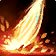

湮灭唤魔师 PvP 判断训练器
湮灭的判断是什么时候你敢站住那两秒。
但蓄力期间你必须站着。所以这个专精的核心判断不是「打谁」，是「现在敢不敢站住」——而
该不该开？勾一下就知道
勾掉几条，就有多少胜算。
三个时钟
湮灭的节奏挂在这三个数字上。
判断点：这一下值不值得站满。对面控制交完了就蓄满，还有硬控在手就打一级放掉。
Unburdened Flight（49/50 全员必带）让它期间移动速度不会被降到 100% 以下——等于免疫减速，这是它使用率这么高的原因。
Power Nexus 把上限提到 6 点——上限越高，你能在窗口里连续按出的技能越多。
本版定盘（top50 三对三实测）

英雄天赋：龙鳞指挥官 Scalecommander49/50 走这条，塑焰者只有 1 人▸龙鳞指挥官（Scalecommander）49/50，塑焰者（Flameshaper）1 人。这不是推荐，是唯一解。
这条线围绕
Unburdened Flight（49/50）—— 几乎全员必带。
Time Stop（43/50）冻结盟友时间流让他无敌、Scouring Flame（30/50）火焰吐息灼烧有益魔法效果、Obsidian Mettle（26/50）黑曜鳞片期间免疫打断和沉默。
注意 Obsidian Mettle 的存在意义：你的技能都要蓄力，被打断就废。对面打断多的时候这一格价值飙升。